Wireshark Network Analysis 2nd Ed · Laura Chappell
When there's no GUI, the command line is your Wireshark.
tshark, editcap, mergecap, capinfos, and dumpcap — capture and analyze without a graphical interface.
No questions yet.
No notes yet.
💡THINK FIRST · TSHARK — TERMINAL WIRESHARK
tshark is the command-line version of Wireshark. When would you choose tshark over the Wireshark GUI?
HINT
Think about headless servers, scripting, automation, and high-speed captures.
MODEL ANSWER
(1) Remote servers: SSH into a server with no GUI — tshark captures and analyzes in-place. (2) Automation/scripting: tshark output can be piped to grep, awk, or python for automated analysis. (3) High-speed captures: tshark has lower overhead than the GUI — fewer dropped packets under load. (4) Large file analysis: scripted field extraction from huge pcap files is faster than loading into the GUI. (5) Integration: tshark -T json output integrates directly with SIEM and log pipelines.
tshark — Terminal Wireshark
tshark is included with every Wireshark installation. It provides capture and analysis functionality through a command-line interface.
Basic Usage
tshark -D — list available interfaces
tshark -i eth0 — capture on interface eth0 (live)
tshark -r capture.pcap — read and display a capture file
Outputs three tab-separated columns: source IP, destination IP, destination TCP port for every TCP packet.
SCRIPTING POWERtshark -r capture.pcap -T fields -e http.host -Y http.request | sort | uniq -c | sort -rn | head -20 — shows the top 20 most frequently requested HTTP hostnames in a capture. This kind of pipeline is impossible in the GUI and runs in seconds on large files.
🧠
MENTAL NOTE
tshark: -i (interface), -r (read file), -w (write file), -f (BPF capture filter), -Y (display filter), -T fields -e field (extract specific fields), -T json (JSON output). Key advantage over GUI: scriptable, pipeable, no GUI overhead, runs over SSH on remote servers.
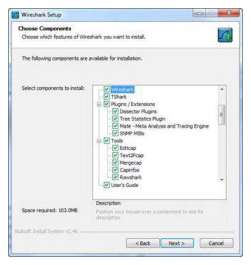
📷Figure 395 — open trace file to view
Figure 395. Tshark and the other command-line tools are installed by default Use Wireshark.exe (Command-Line Launch) Wireshark.exe launches the graphical view of Wireshark. There are numerous paramete
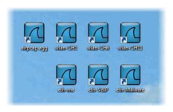
📷Figure 396 — open trace file to view
Figure 396. You can create shortcuts to launch customized Wireshark configurations
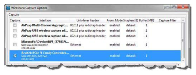
📷Figure 397 — open trace file to view
Figure 397. The Capture Options window provides device information
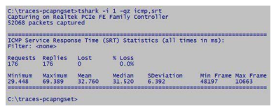
📷Figure 401 — open trace file to view
Figure 401. You can gather Service Response Time for numerous protocols Tshark Examples The following table provides numerous examples of command strings to launch Tshark with specific settings.
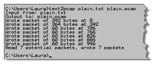
📷Figure 407 — open trace file to view
Figure 407. shows the simple process to convert this text file to a pcap trace file. If the original text contains date/timestamps or does not include certain headers (Ethernet, IP, UDP or TCP for exam
Ask a Question
Add a Note
💡THINK FIRST · TSHARK FILTERS AND OUTPUT
tshark uses both capture filters (-f) and display filters (-Y). What is the difference and when should you use each?
HINT
One reduces what's captured; one reduces what's shown from already-captured data.
MODEL ANSWER
-f is a BPF capture filter applied in the kernel — unmatched packets are never captured (reduced volume, better performance, cannot be changed after start). -Y is a Wireshark display filter applied post-capture when reading a file or after packets are captured — all packets are captured but only matching ones are displayed/processed. Use -f when you know what you want before capturing (performance-critical). Use -Y when analyzing an existing file or when you need flexibility to adjust the filter without restarting the capture.
Figure 398. Use tshark –qz io,phs to display the protocol hierarchy statistics only
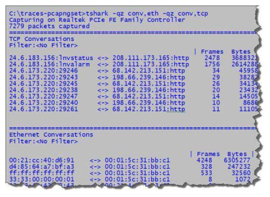
📷Figure 399 — open trace file to view
Figure 399. Many -z options can be used multiple times in one command-line string Gather Host Name with Tshark You can use Tshark to gather host information. In Figure 400 we have used the command
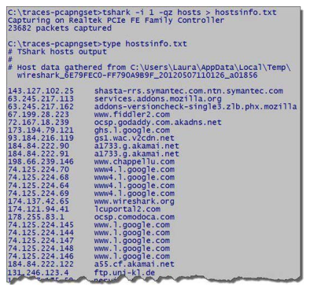
📷Figure 400 — open trace file to view
Figure 400. Use Tshark to export host information
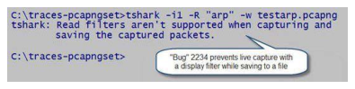
📷Figure 402 — open trace file to view
Figure 402. Bug 2234 prevents simultaneous capture and save with a display filter
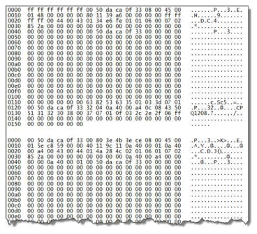
📷Figure 406 — open trace file to view
Figure 406. The plaintext version of captured traffic
Ask a Question
Add a Note
💡THINK FIRST · EDITCAP AND MERGECAP
editcap can split, trim, and modify capture files. What are three common forensic or operational use cases for editcap?
HINT
Think about large captures, sensitive data, and time-based forensic analysis.
MODEL ANSWER
(1) Time-based extraction: trim a 24-hour capture to a 5-minute window around an incident: editcap -A '2024-03-15 14:20:00' -B '2024-03-15 14:25:00' full.pcap incident.pcap. (2) Split large files: break a 10 GB file into 100 MB chunks for easier analysis: editcap -c 100000 large.pcap chunk_. (3) Anonymize: remove specific packets or truncate payload to headers only before sharing: editcap -s 68 full.pcap headers-only.pcap (snap length 68 = headers only, no payload).
editcap and mergecap
editcap — Edit Capture Files
editcap -A '2024-03-15 14:00:00' -B '2024-03-15 15:00:00' in.pcap out.pcap — trim to time range
editcap -c 100000 large.pcap chunk_ — split into 100,000-packet chunks
editcap -s 96 in.pcap out.pcap — truncate each packet to 96 bytes (headers only)
mergecap -w combined.pcap file1.pcap file2.pcap file3.pcap — merge by timestamp
mergecap -a -w sequential.pcap file1.pcap file2.pcap — append (no timestamp sorting)
mergecap is essential for combining ring buffer files: mergecap -w full.pcap ring_00001.pcap ring_00002.pcap ring_00003.pcap
TLS KEY INJECTIONeditcap --inject-secrets embeds TLS session keys directly into a pcapng file so anyone who opens it in Wireshark can decrypt the TLS without separately configuring the key file. Useful for sharing decrypted captures with colleagues — but be careful: the keys are now in the file and should not be shared externally.
🧠
MENTAL NOTE
editcap: trim by time (-A/-B), split by packet count (-c), truncate payload (-s), deduplicate (-d), inject TLS keys (--inject-secrets). mergecap: merge by timestamp (default) or append (-a). Essential for combining ring buffer files and for forensic time-window extraction.
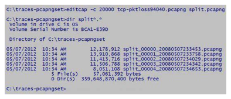
📷Figure 404 — open trace file to view
Figure 404. depicts the process of splitting a single file into a file set consisting of a maximum of 20,000 packets each. The file names include a file number and a date/timestamp so they can be linke
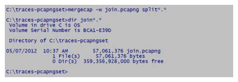
📷Figure 405 — open trace file to view
Figure 405. shows the process of combining five trace files beginning with "split" into a new trace file called join.pcapng.
dumpcap -i eth0 -f "not port 22" -w capture.pcap — with BPF capture filter
dumpcap requires fewer privileges than tshark (can run without full root on Linux if in the wireshark group). It's the recommended tool for always-on monitoring captures.
PRODUCTION MONITORINGFor long-running production monitoring: use dumpcap with ring buffer. For real-time analysis of a running capture: open the ring buffer files in Wireshark while dumpcap continues capturing. Never use the full Wireshark GUI for high-speed production captures — the display overhead causes drops.
🧠
MENTAL NOTE
capinfos: file summary including MD5/SHA hash (-H flag) for forensic integrity verification. dumpcap: lightweight capture engine, lower overhead than GUI, recommended for production monitoring. dumpcap -b filesize:N -b files:N = ring buffer. capinfos -H = hash for chain-of-custody documentation.
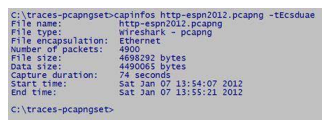
📷Figure 403 — open trace file to view
Figure 403. Capinfos displays basic information about trace files Capinfos Examples The following table provides numerous examples of command strings to examine the contents of trace files.
Ask a Question
Add a Note
TL;DR — CHAPTER 33
tshark: command-line Wireshark for capture (-i), read (-r), display filter (-Y), capture filter (-f), field extraction (-T fields -e). Statistics: -q -z conv,tcp. editcap: trim by time (-A/-B), split (-c), truncate (-s), deduplicate (-d), inject TLS keys (--inject-secrets). mergecap: merge pcap files by timestamp. capinfos: file statistics + hash verification (-H). dumpcap: lightweight headless capture for production, ring buffer support.
Review Questions
Q33.1
What is the difference between tshark's -f and -Y options?
HINT
Think about when each filter runs and what it does to non-matching packets.
ANSWER
-f specifies a BPF capture filter — applied in the OS kernel before packets are stored. Non-matching packets are discarded permanently and never appear in any output. This reduces capture volume and CPU overhead but cannot be changed after capture starts. -Y specifies a Wireshark display filter — applied after packets are captured (or when reading a file). All packets are captured; only matching packets appear in the output. -Y can be used with -r to filter an existing file. Combine both: -f for performance, -Y for flexible analysis.
Q33.2
Write a tshark command to extract all unique HTTP User-Agent strings from a capture file named 'web.pcap'.
HINT
Use field extraction mode and shell utilities to de-duplicate.
ANSWER
tshark -r web.pcap -T fields -e http.user_agent -Y http.request | sort -u. Breakdown: -r reads the file; -T fields enables field extraction mode; -e http.user_agent specifies the field to extract; -Y http.request filters to only HTTP request packets (which have the User-Agent header); sort -u de-duplicates the output. This shows every distinct User-Agent in the capture — useful for identifying unusual or malicious clients.
Q33.3
You have 6 ring buffer files from an overnight capture (ring_001.pcap through ring_006.pcap). How do you combine them into one file while preserving chronological packet order?
HINT
Which command-line tool merges pcap files?
ANSWER
mergecap -w overnight.pcap ring_001.pcap ring_002.pcap ring_003.pcap ring_004.pcap ring_005.pcap ring_006.pcap. mergecap sorts packets from all input files by timestamp and writes them to the output file. This produces a single chronologically ordered capture spanning the full overnight period. Alternatively: mergecap -w overnight.pcap ring_*.pcap using shell glob expansion (filenames must sort in chronological order for the glob to work correctly).
Q33.4
How do you use editcap to extract only the packets from 14:00:00 to 14:05:00 on March 15, 2024 from a large 24-hour capture?
HINT
What editcap options specify time boundaries?
ANSWER
editcap -A '2024-03-15 14:00:00' -B '2024-03-15 14:05:00' full_capture.pcap incident_window.pcap. -A specifies the start time (After — packets before this time are discarded); -B specifies the end time (Before — packets after this time are discarded). The output file contains only the 5-minute window of interest. Times are specified in the format 'YYYY-MM-DD HH:MM:SS'. The timezone interpretation depends on the timestamps in the capture file — use UTC if the capture was made with UTC timestamps.